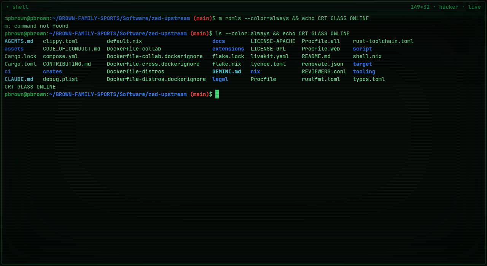
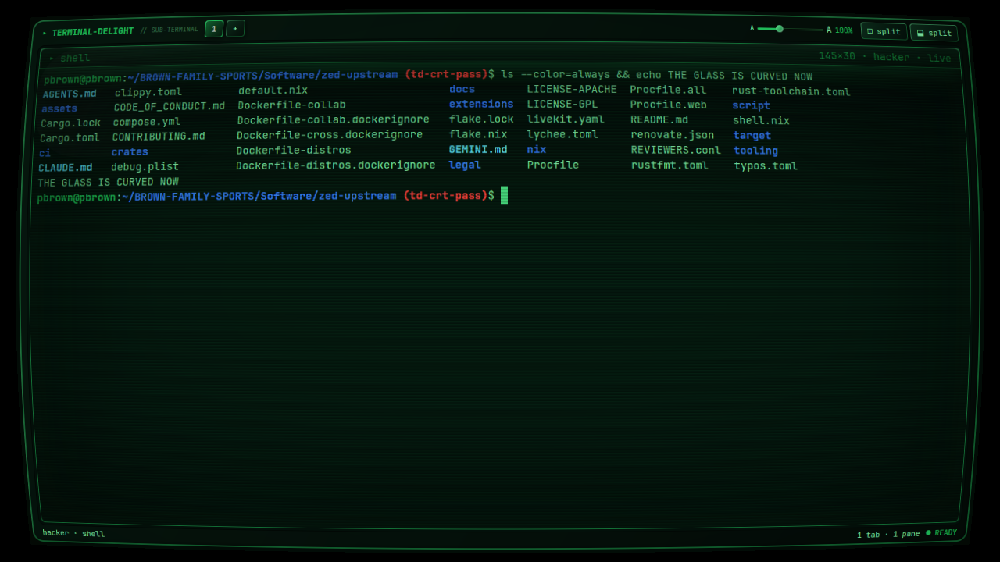
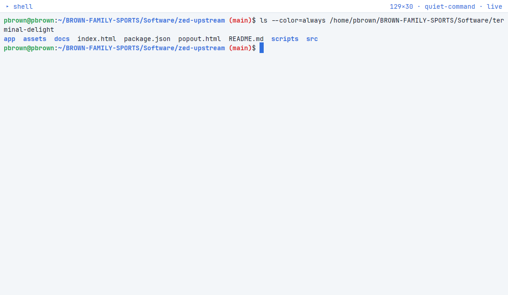
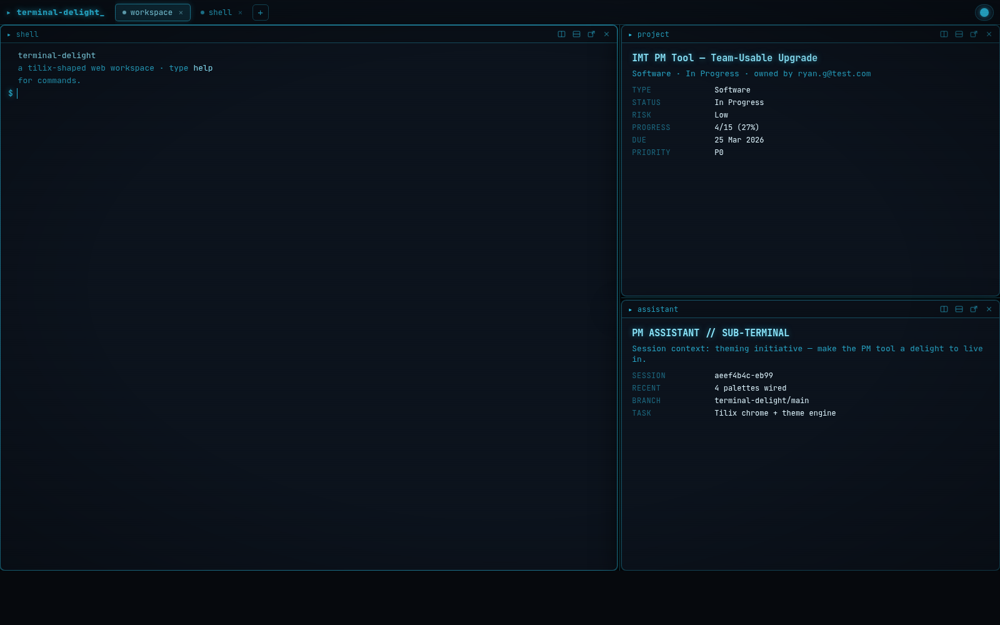
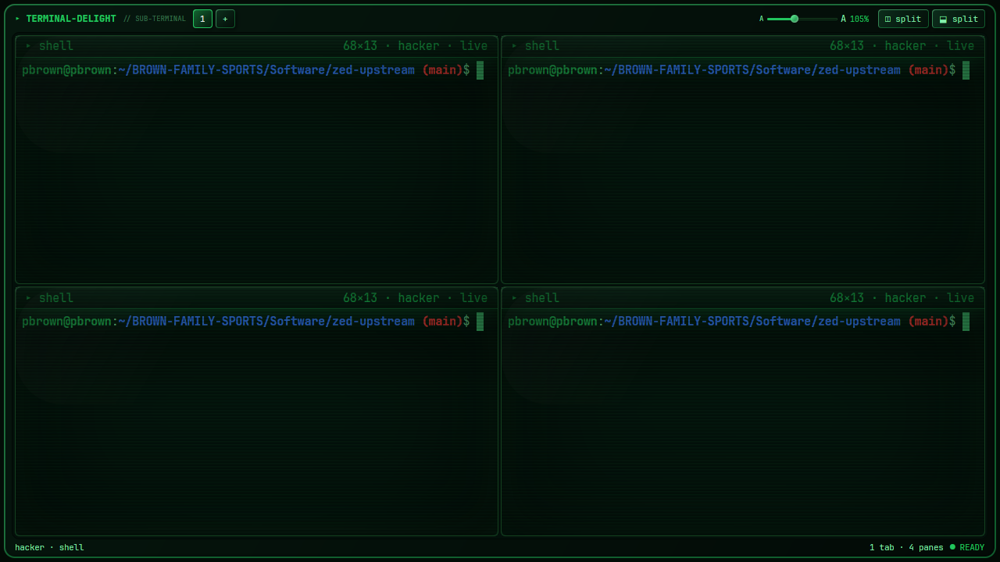
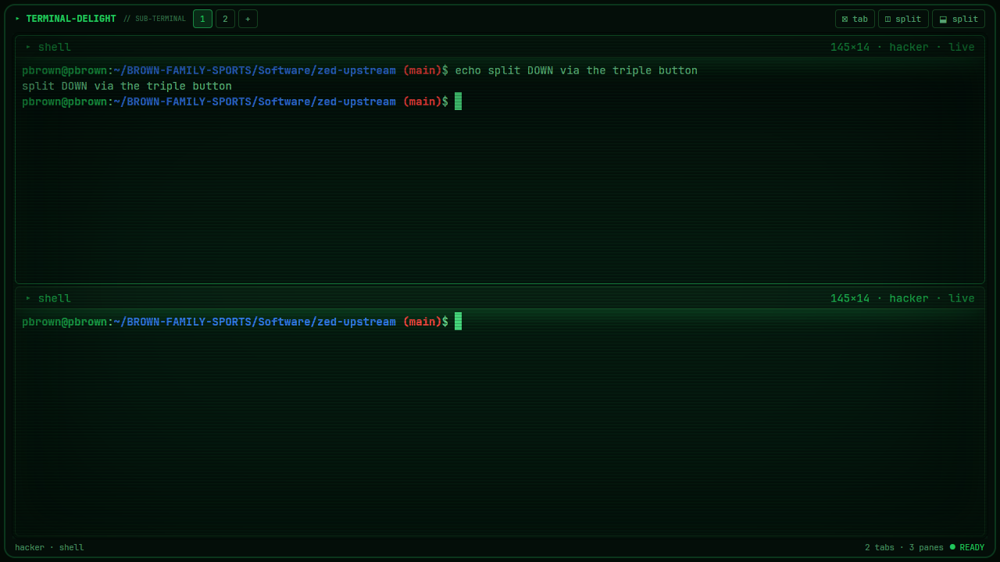
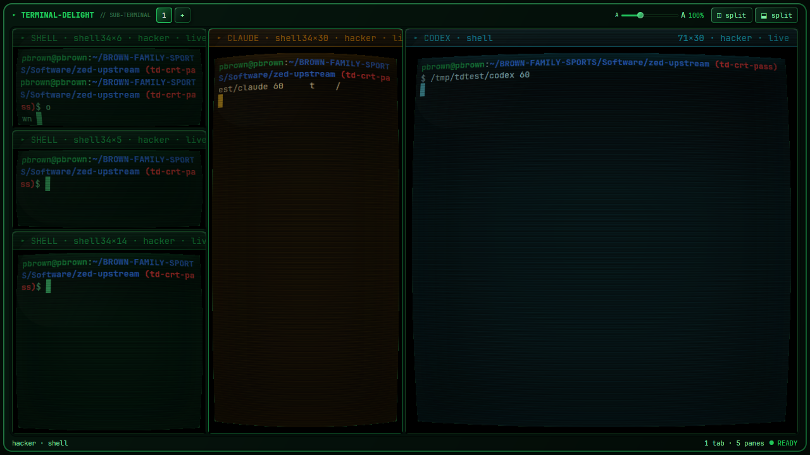
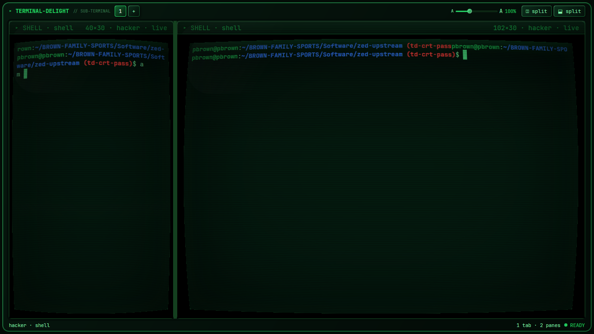
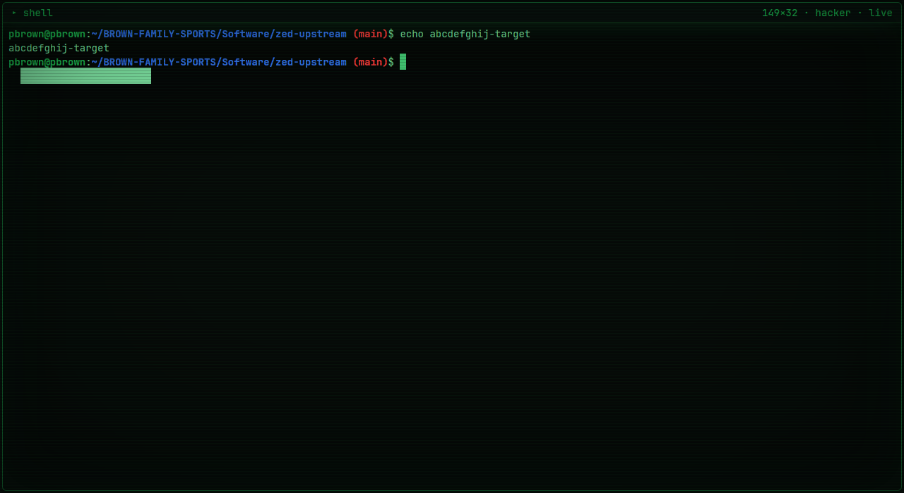

A GPU-native Linux terminal with a hot-reloadable, CRT-flavored visual identity.
Rust end-to-end: gpui renders every pixel on the GPU, alacritty_terminal does the VT emulation, your real shell runs on a real PTY. Tiling multi-pane, per-pane theming & monitor-OSD grading, scanlines and a real barrel warp.

Most terminals pick one: fast, or pretty. terminal-delight renders entirely on the GPU, so the CRT look — scanlines, glow, vignette, a genuine per-pane barrel warp — costs nothing at the keyboard. Key-to-echo lands at p50 ~121µs; seq 1 100000 finishes in 0.089s. The aesthetic is data: themes are TOML files you edit while the app runs, no recompile.
True tiling-tree splits that divide only the focused pane, tabs, sub-tab drag-to-split, and a pop-out scratch window with tear-off.
Four built-ins plus a live-editable custom slot read from ~/.config/terminal-delight/theme.toml and reloaded on save, ~300ms, no restart.
Theme and monitor-OSD grade groups inherit the workspace independently — each with a live, non-destructive "follow outer" toggle.
Brightness, contrast, colour, text, background, gamma — plus text size — global or per-pane, applied in HSLA at paint time.
Scanlines, vignette, glow and a real barrel warp via a vendored gpui renderer patch. Per-theme dials; fully off in light themes.
PTY + full VT emulation (bash, vim, top, tmux), 16/256/truecolor, scrollback, mouse selection, bracketed paste, live SIGWINCH resize.








This runs a full Linux entirely client-side via WebAssembly — on your machine, in your tab.
Fork-bomb it, fill the disk, :(){ :|:& };: to your heart's content: the only thing you can crash is this tab. Reload and it's back.
It is generic web-Linux for fun — not terminal-delight's gpui/wgpu renderer (that's a native app; see the gallery above and Build).
The goal: 2-to-20 real terminals in a single window — native-snappy, web-app polished, themeable at will, open source. A terminal you keep open because it's nice, not just because you have to.
terminal-delight's own code is MIT. But it builds against a pinned Zed/gpui graph that links GPL-3.0 crates — so a redistributed binary would be GPL-3.0. We don't ship binaries; you build from source, and the GPL crates are yours, built locally.
It targets the freedesktop Linux desktop (X11 & Wayland) via gpui's wgpu renderer. Not macOS or Windows.
# deps (Ubuntu): Vulkan + build libs bash scripts/setup-deps.sh # clone the pinned Zed checkout + apply the td-crt-pass renderer patch bash scripts/prepare-gpui.sh # run it cd app && cargo run
gpui is consumed from a pinned Zed checkout carrying the td-crt-pass renderer patch (the per-pane barrel warp) — set up as a sibling zed-upstream/ directory, same as CI. Full instructions, the CI bar, and the clean-room rule are in CONTRIBUTING.md ↗.